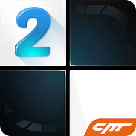
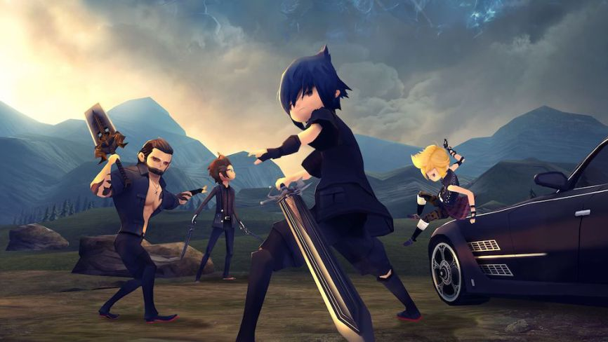
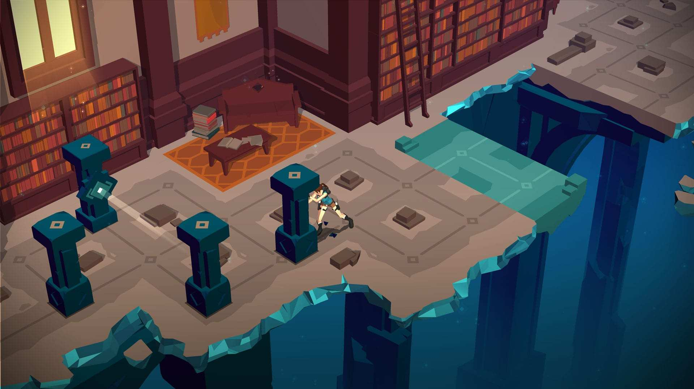
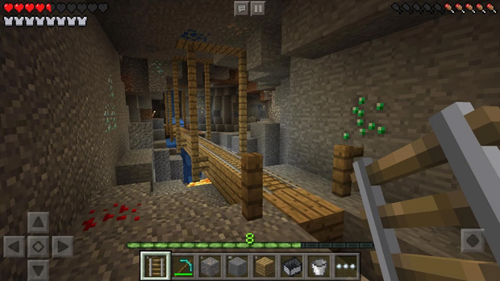
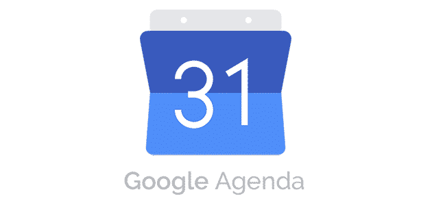
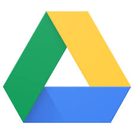
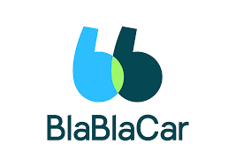
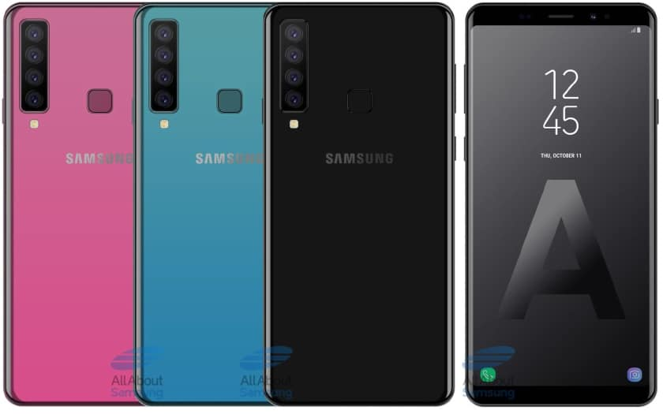
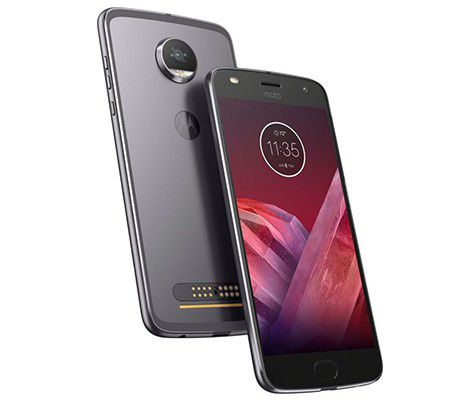
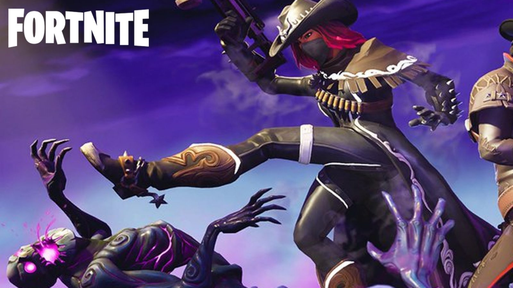

Actualités
L'actualité de la semaine, cette semaine nous parlerons tout d'abord des meilleurs applis tout public de tous les temps, ensuite nous parlerons des meilleurs jeux du moment en commençant par les jeux gratuits et nous finirons par les meilleurs applications pour collégiens/lycéen/étudiant.
Commençons par les meilleurs applications jamais détrôner.
Vous voulez apprendre l’anglais ? Le Russe ? le Japonais ? Sur Babbel vous n’avez pas besoins de vous déplacer, pour un prix plutôt raisonnable (6,65 €/mois pour 3 mois et 4,95€/mois pour 12 mois soit moins chère qu’une années scolaire ou une formation dans un établissement spécialisé) l’application est simple à prendre en main et les progrès sont vite observables. Malgré le test d’entrée qui est extrêmement simple même au niveau avancé (le site dispose de 2 niveaux de difficultés, débutant et avancé) la suite est plutôt intéressante, le faits de pouvoir avoir accès à Babbel sur tous les appareils est un atout.

VLC est d’aussi longtemps que je m’en souvienne, le plus ancien lecteur vidéo que j’ai connu, pas le plus performant mais il fait tout de même le café, ce lecteur est simple d’utilisation malgrés son interface un peu vieillot.
Deux nouvelles applications qui sont sortis de nulle part et qui ont leurs heures de gloire. PulseSMS et Bandsintown, la première étant Pulse SMS un service qui comble avec brio l'absence d'iMessage pour les utilisateurs d'Android. Avec cette application, nul besoin de migrer tous vos amis et votre famille vers Telegram ou WhatsApp ! Il devient alors agréable de répondre à vos correspondants sur votre ordinateur. La seconde, Bandsintown est est une application musicale gratuite vraiment très utile pour les amateurs de musique, et surtout de musique live. Après avoir simplement renseigné votre ville de résidence, l’application va scanner la discographie de votre smartphone. BandsInTown vous affiche alors la liste des artistes présents dans votre musicothèque qui vont passer dans votre ville. L’application vous indique alors les dates, lieux et prix des places pour chacun des artistes présents dans votre discographie.

Les meilleurs jeux gratuit d’Android :
Si la qualité de Alto's Adventure était assez indiscutable, celle de cette suite créé par le studio Snowman est encore d'un niveau supérieur ! Plus fin, plus poussé, plus beau, plus complet, avec tout de même un petit brin de folie en moins sans les lamas, mais Alto's Odyssey risque de difficilement partir de votre iPhone ou iPad tellement il en devient addictif ! Le seul petit regret réside dans le fait que le départ ressemble un peu trop au premier opus, et qu'il faudra y jouer quelques temps avant de par exemple débloquer le ride mural ou le vol, mais après, vous vous délecterez en vous amusant ! À jouer dès que vous aurez un moment de libre, ou lorsque vous aurez besoin d'évasion.

Duet est une sorte de « die and retry » où chaque erreur poussera le joueur à s’améliorer, à apprendre du jeu et à s’adapter aux nouvelles difficultés. Simple et efficace, Duet dispose d’un contenu tout à fait acceptable. Loin d’être le jeu indépendant de l’année, Duet saura tout de même vous donner quelques heures de jeu agréables (mais aussi de souffrance). Au-delà d’un gameplay qui semble simpliste au premier coup d’oeil, le jeu dispose d’une véritable âme qui saura charmer les joueurs les plus exigeants et ayant soif de nouveaux défis
Je ne pensais pas faire un jour la critique d'un jeu Android, qui plus est aussi modeste. Mais là je dois avouer que je suis très agréablement surpris. Le premier était déjà un jeu d'arcade sympathique et particulièrement addictif. Le principe est simple et efficace. Néanmoins le jeu ne proposait pas tant de contenu que ça : les musiques n'en étaient pas vraiment (c'étaient des sons au hasard) et les modes se ressemblaient plus ou moins. Maintenant, de vraies musiques sont proposées, et pas des moindres. J'ai lancé le jeu sans m'attendre à grand chose. Je commence, et la mélodie m'est familière : c'est le magnifique Canon de Pachelbel ! Bach, Mozart, Chopin, etc. sont présents. De plus les rythmiques sont plus poussées que dans le premier avec de nouvelles touches.
Les jeux payants du moment :
Le pari était osé, mais s'avère finalement gagnant pour ce Final Fantasy XV Pocket Edition étonnant, qui parvient à porter l'aventure originale sur un support techniquement moins abouti en faisant des concessions sur la technique et en repensant efficacement son level design. Le tout en conservant l'ensemble de la trame scénaristique et même les voix françaises, qui détonnent tout de même un poil avec le nouveau style visuel de l'ensemble. Le tarif global en fera tiquer plus d'un et le soft s'avère encore gourmand et inaccessible sur nombre de supports mobiles, mais cette Pocket Edition demeure une bonne expérience à peine gâchée par les quelques imprécisions de gameplay qui pointent parfois le bout de leur nez.
Une fois encore, en 2018, Limbo prouve qu'un jeu n'a pas besoin de 4K ou d'effets visuels en tout genre pour être enivrant. Avec ses mécanismes bien pensés et surtout une ambiance envoûtante, le jeu de Playdead n'a pas pris une ride et c'est avec énormément de plaisir qu'on le redécouvre. Si en plus, on peut y jouer sur la couette avec juste un casque sur les oreilles, et une tasse de thé bien chaud à portée de main, que demander de plus ?
L’expérience GO, après l’assassinat, se reconvertit avec succès dans l’art du pillage. Une aventure au tour par tour orientée puzzles et résolutions d’énigmes pour un retour aux sources de la franchise. Un périple se déroulant dans une jungle à la direction artistique sobre et élégante pour une peinture édifiante d’un tombeau et de sa jungle à l’origine de niveaux grouillant de vie. Square Enix signe avec Lara Croft GO une exclusivité mobile de qualité propulsant le jeu vidéo sur smartphones et tablettes dans la sphère “gamer”.
Monument Valley est un jeu mobile disponible en téléchargement sur l'Appstore iOS (iPhone/iPad) et le Play Store Android (AppShop Amazon inclus), au tarif de 3,59 € ou 1,49 € selon le store et développé par le studio UsTwo Games. Ida, jeune princesse de son état, doit se frayer un chemin sans dessus-dessous au travers de plusieurs monuments à la géométrie abracadabrantesque et occupés par de dérangeantes corneilles. Pour arriver à bon port, il lui faudra jouer avec la perspective, inverser les points de vue, pour faire d'un décor chaotique une voie vers la libération d'un royaume onirique.
Je pense que ce Minecraft: PE a beaucoup à donner dans l'avenir, certes comparé à la version original de Minecraft sur PC, il y a beaucoup de différence... mais je suis sûr que plus tard, jeu sera super: d'où mon 18, car le jeu n'est pas encore terminé ! Il manque les crafts et monstres,et beaucoup d'objet, mais la créativité peut nous aider à passer le temps.
Meilleures applications pour collégiens/lycéen/étudiant :
Vous en avez marre d’avoir un agenda papier, google agenda est une solution beaucoup d’utilisateurs en sont satisfait (une note de 4,2 sur 5 pour prêt d’un million d’avis sur le play store), elle vous permet entre-autre d’avoir un agenda utile dans plusieurs modes possible, par exemple, au lieu d’écrire plusieurs tâches sur un seul jour d’une semaine, vous pouvez passez en mode “jour” pour marquer l’heure exacte de votre ou vos tâches.
Si vous avez un projet complexe (ou non) en tête qui demande plusieurs étapes, Trello peut vous aider à vous organiser. Trello est un outil de gestion de projet collaboratif, vous avez plusieurs tâche à faire, écrivez les des la catégorie “tâche en attente” vous commencez une des tâche, mettez la dans la catégorie “en cours” vous l’avez terminée, mettez la dans “terminée”, sans compter que vous pouvez faire plusieurs tâche en même temps !

La meilleure application de transfert et partage de fichier est incontestablement Google Drive, une interface facile et intuitive et un transfert rapide, rien de mieux pour envoyer un google docs ou un document PDF à son patron.
Mieux que Skype, mieux que Teamspeak, Discord réunis les deux, le logiciel de communication permet entre autre de créer des serveurs, des groupes et des conversations privées et des appels vidéos.

Besoin d’aller quelque part mais pas de moyens de transport à disposition, vous ne voulez pas prendre le train ca c’est trop chère, BlaBlaCar est une application de recherche de covoiturage vous permettant de voyager à prix bas en toutes sécurité et en qualitée.
Autres actualités
Le Galaxy A9 est sortis ! 4 capteurs photo rien que ça !
Moto Z2 Play sortis !
Fortnite Battle Royale, la célèbre bouze … euh jeu de Epic Games est désormais sur Android et Nintendo Switch !
